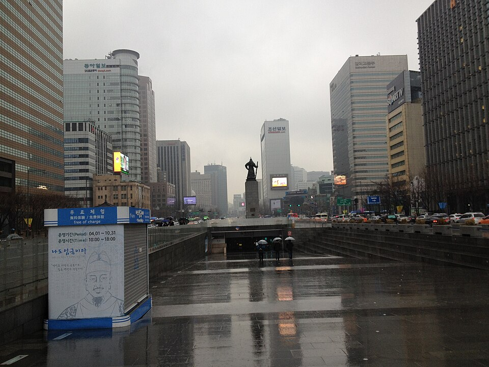
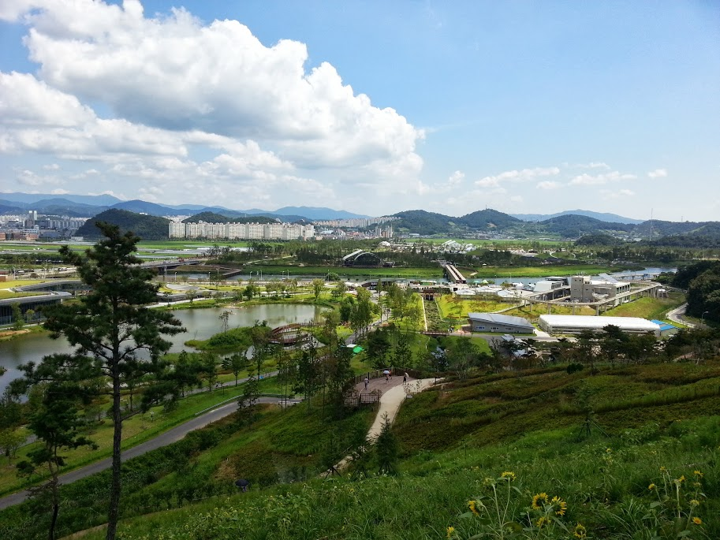

動画に登場した全羅南道のスポット：麗水から順天・宝城まで
二本の動画に登場した麗水、順天、宝城（全羅南道）のカフェ、市場、観光地、宿泊先を紹介し、旅程を組むための簡単なヒントをまとめました。
全羅南道：海、庭園、茶畑
全羅南道（チョンナムド）は、麗水の夜の海、順天湾、潭陽の竹林で知られ、南道式の一膳飯（ナムド・ハンジョンシク）の故郷とも呼ばれています。代表的な郷土料理には、麗水のヤンニョックワタリガニ（ドルゲジャン）、木浦のチュンガンヌードル、エイの発酵料理（ホンオ）、潭陽のテッカルビ（牛カルビのつくね焼き）、南道ハンジョンシクなどがあります。このガイドでは、動画「麗水に行くべき理由」と「全羅道の田舎と緑茶畑」に登場した場所を、麗水エリアと順天・宝城エリアに分けて紹介します。
麗水
ナムアエグリムカフェ
オドンド島を望む景色の中で飲み物を楽しめるカフェです。手作りのお土産も販売しているので、おみやげ探しにも便利です。
イ・スンシン広場

有名な亀甲船（ごっこうせん）の復元模型を無料で見られる公共の広場です。麗水の中心部を散策する際の出発点に適しています。
麗水アクアプラネット

シロイルカやアザラシなどの海洋生物がいる水族館です。雨の日や子ども連れの旅行にも向いています。
ハメル灯台＆ハメル記念館
オランダ人船員ヘンドリック・ハメルの物語を紹介する施設です。海外からの旅行者にとっては、朝鮮と欧州の初期の交流を知るきっかけになります。
向日庵（ヒャンイルアム）

断崖の上に建つ寺院で、海から昇る日の出を眺める場所として知られています。
エンジェル壁画村
路地にカラフルな壁画が並び、数軒のカフェもあります。ゆっくり散歩しながら写真を撮るのに向いた場所です。
麗水水産市場
新鮮な海産物が並ぶ市場で、港町の暮らしを間近に感じられます。
麗水港

港の周辺には海鮮料理店が集まっており、ドルゲジャンなどの郷土料理を探すのに自然な場所です。
麗水旧港海洋公園
海辺にシーフードの飲食店が並ぶエリアです。麗水の夜の海を眺めながらの夕食におすすめです。
順天と宝城
順天湾国家庭園

散策のために作られた大きな国家庭園です。ゆっくり歩き回れるよう、時間に余裕を持って訪れるとよいでしょう。
宝城緑茶畑 大韓茶園（テダハンダウォン）

動画に登場した田舎の風景や茶畑の場面と重なる、緑茶の茶園です。
ダヴィンチホテル順天
動画に登場したホテルです。順天と宝城をひとつの旅程でまわる際の拠点として検討できます。
旅程のヒント
訪問先は麗水と順天・宝城の二つのエリアに分かれるため、それぞれを一日ずつ割り当てると移動が楽になります。麗水では、イ・スンシン広場、水産市場、港、旧港海洋公園など海と海鮮に関する場所をまとめて回り、最後に港近くで夜の海を眺めながら夕食をとるのがおすすめです。向日庵で日の出を見たい場合は、早朝の時間を確保しておきましょう。順天・宝城の行程では、順天に滞在して庭園の散策と大韓茶園の茶畑見学を組み合わせると、無理のない日程になります。
動画に登場したお店・スポット
- ナムアエグリムカフェ (나무애그림 카페) ドリンク、手作りのお土産、オドンド島の眺め NAVER地図 Googleマップ
- イ・スンシン広場 (이순신광장) 無料で見られる亀甲船の復元模型 NAVER地図 Googleマップ
- 麗水アクアプラネット (아쿠아플라넷 여수) シロイルカやアザラシがいる水族館 NAVER地図 Googleマップ
- ハメル灯台＆ハメル記念館 (하멜등대 & 하멜기념관) オランダ人船員ヘンドリック・ハメルの物語 NAVER地図 Googleマップ
- 向日庵（ヒャンイルアム） (향일암) 日の出の眺めで知られる断崖の寺院 NAVER地図 Googleマップ
- エンジェル壁画村 (천사벽화마을) カラフルな壁画の路地とカフェ NAVER地図 Googleマップ
- 麗水水産市場 (여수 수산시장) 新鮮な海産物 NAVER地図 Googleマップ
- 麗水港 (여수항) 港沿いの海鮮料理店 NAVER地図 Googleマップ
- 麗水旧港海洋公園 (여수 구항 해양공원) 海辺の海鮮飲食店が並ぶエリア NAVER地図 Googleマップ
- 順天湾国家庭園 (순천만국가정원) 国家庭園の散策 NAVER地図 Googleマップ
- 宝城緑茶畑 大韓茶園 (보성 대한다원) 緑茶の茶園 NAVER地図 Googleマップ
- ダヴィンチホテル順天 (다빈치호텔 순천) 宿泊 NAVER地図 Googleマップ
場所や営業時間は変わることがあります。地図で確認してください。